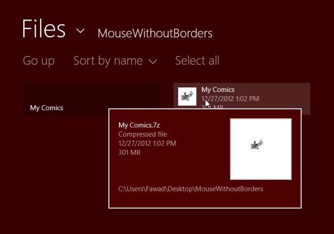
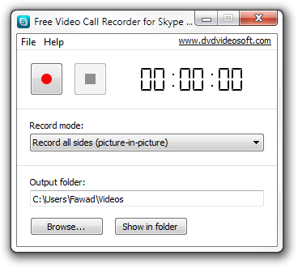
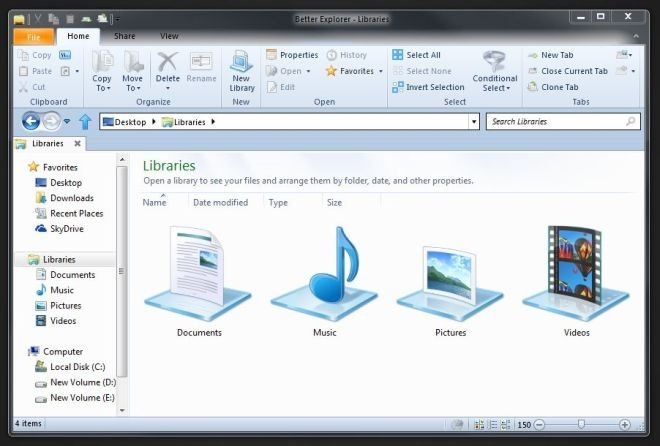
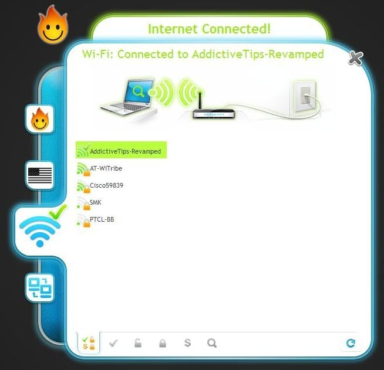
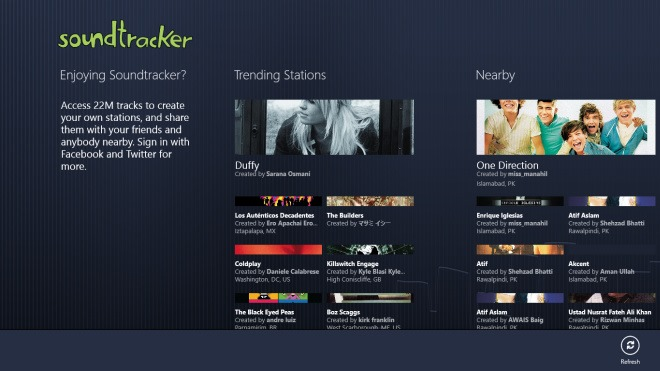
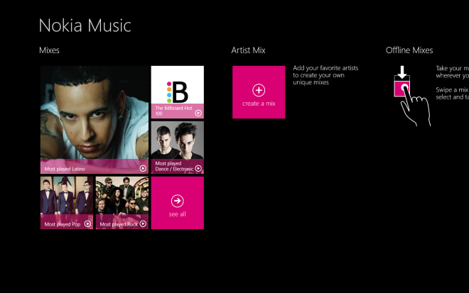
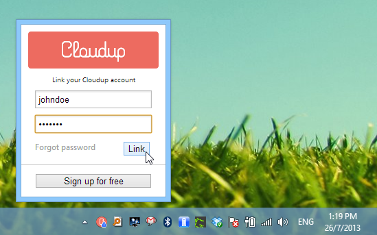
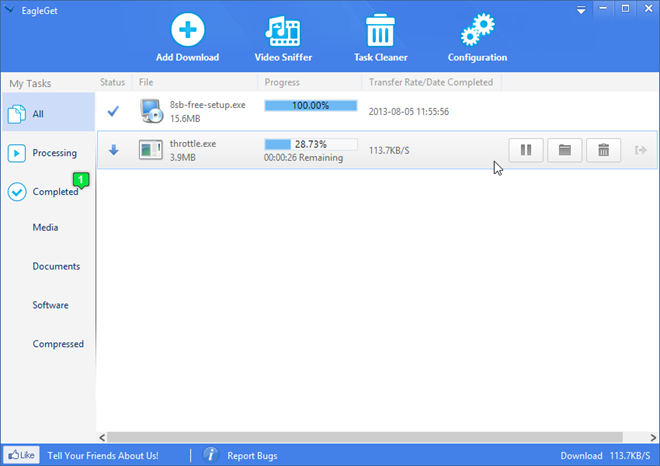

Every year, we review a truckload of desktop and mobile apps as well as tips and tutorials for our loyal AddictiveTips readers. And as we look back on another year gone, it’s time we present our behemoth compilation of the biggest and most spectacular releases on Windows platform in 2013. The operating system that has made it way to tablets from notebooks and desktop PCs was in full-swing this year, receiving an all new 8.1 update, loads of Windows Store apps including the likes of Flipboard, Facebook and Twitter, as well as some amazing conventional desktop app releases. So without any further ado, lets take a look at the best apps for Windows from 2013!
1. AppSwitch (A free Metro UI app that helps you find replacement Windows Store apps for iOS or Android apps.)
2. Screencast Capture Lite (A barebones tool for recording good-quality screencasts of the entire screen or a selected area, without confusing you with additional obtrusive features.)
3. NanWick Windows Uninstaller (A simple tool that lets you remove a second Windows installation after dual booting the system with another OS.)
4. SendTo-Convert (Easily resize multiple images from the ‘Send to’ option in the right-click context menu, or via drag and drop, based on a profile you can configure.)
5. Unpacker (Probably one of the best Windows Store apps for quickly extracting ZIP, RAR, 7Z and other archived formats.)

6. Boot UI Tuner (Permanently enable the advanced boot menu in Windows 8 / 8.1, to make it appear every time you power up your PC.)
7. YouVue (Watch music videos from different genres, get access to top music charts from different countries, create playlists, add videos to a favorite list, and access your history for repeated playback in this Windows Store app.)
8. TwitterDownloader (Download photos posted on Twitter profiles to your Windows PC.)
9. Dropbox For Windows 8 (The official Dropbox app for Windows 8 and RT tablets and computers that comes with all basic Dropbox functionality.)
10. Weather Beetle (A feature-laden weather application for Windows that fetches textual and graphical weather data from National Oceanic and Atmospheric Administration.)
11. Windows 8 Update Notifier (Bring back the automatic update notification bubble in Windows 8 with this handy little tool.)
12. Reditr (Unarguably one of the best third-party Reddit clients on Windows that’s beautiful, functional, intuitive and lightweight.)
13. aTunes (A versatile, open-source music manager for Windows that also supports Mac and Linux operating systems.)
14. SavePictureAs (No-frills tool that lets you save pictures just using hotkeys, saving you a lot of time if you save pictures often while browsing.)
15. WinaeroGlass (Easily restore the Windows 7-esque Aero glass effect on Windows 8 and 8.1.)
16. Cumolu (Access Dropbox, SugarSync, Google Drive, SkyDrive and Box under one Metro UI app on Windows 8 and RT.)
17. TileManager (Create tile shortcuts in batch on Windows 8 Start Screen, edit their names, and change their icons.)
18. Free Video Call Recorder For Skype (Record Picture-in-Picture Skype video calls with a few clicks.)

19. Windows 8 Apps Data Backup (Easily backup and restore your Windows 8 apps, complete with their pertaining data.)
20. Desktop Intray (Organize your files into specific folders according to the file types or extension.)

21. CNN App For Windows (The official Windows Store app of one of the most revered news channel on the planet.)
22. SterJo NetStalker (An advanced firewall that monitors all TCP and UDP connections established by currently running applications and services.)
23. jMovieManager (A Java-based movie manager boasting a bevy of user-friendly features and a decent interface.)
24. Tonido (Multi-platform personal cloud service that provides remote access to files stored across your desktop and mobile devices.)
25. Real APK Leecher (Directly download APK files of Android applications to your PC from Play Store via the Google account associated with your device.)
26. DuckDuckGo For Windows 8 and RT (Search the internet using DuckDuckGo’s search engine, check daily Water Cooler stories, and more.)
27. My Computer Tweaker (This feature-laden software is a tweaker’s dream come true, thanks to its plethora of PC tweaking options for customizing your desktop.)
28. 8StartButton (A highly customizable Start button and Menu replacement app for Windows 8, with loads of settings and a decent UI.)
29. Should I Remove It? (A unique uninstaller utility that helps you decide which software you should get rid of.)
30. BirdFont (An open-source application for creating various font characters from scratch by drawing vector outlines.)
31. DNS Angel (Lets you block unsafe or inappropriate internet content by swapping your default DNS server with a variety of options.)
32. Speaktoit Assistant (Siri-like virtual assistant that aims to help you with your everyday tasks on Windows 8 or RT device or PC.)
33. Sports Republic (Yet another awesome Windows Store app that allows you to keep a tab on your favorite sport.)
34.UC BrowserHD (A gorgeous,feature-laden Modern UI web browser for Windows 8 and Windows RT.)
35. ProcOff (From the makers of AllOff and DownOff, this miniscule app lets you configure automatic system shutdown that triggers upon inactivity of certain process.)
36. SkyFonts (One of the best service to try different proprietary fonts for free, and rent them for a few days or months by paying a small fee.)
37. TheSage (A unique dictionary app that lets you look up meanings, definitions and synonyms/antonyms of words using Wildcard and Anagram search.)
38. Anti Tracks (Remove traces, web cookies and temporary data stored on your computer by web browsers in a few clicks.)
39. Metrogram Live (Seems like Facebook has no plans of releasing Instagram on Windows 8, but this third-party app suffices for the job.)
40. Better Explorer (Brings the Ribbon UI features of Windows 8’s File Explorer to Windows 7.)

41. Toastify (If you listen to Spotify on your Windows machine and want to add the missing global hotkey functionality, then this app is a must-have.)
42. Metro Scaler (This lightweight application lets you adjust Modern UI display scaling of Windows 8.)
43. Simple Watcher (Monitor your folders on local storage or over the network.)
44. Media Companion (Manage and organize TV shows, movies and home videos under a single, decent interface.)
45. OpenWith Enhanced (Replace native ‘Open with…’ dialog box of Windows with an enhanced version that offers a lot more features.)
46. Auto Screenshot Capture (Wanna automate screenshot capturing? This Windows app is all that you need.)
47. Hola (VPN service for Windows, mobile devices and web browsers that offers access to blocked internet content without bandwidth limitations.)

48. Run-Command (An enhanced version of the native Run dialog of Windows offers much more advanced functionality and additional features in a similar interface.)

49. Soundtracker (Discover and listen to music that is popular among people in your vicinity.)

50. Iconmancer (Download and apply icons to files, programs and folders from a large user community.)
51. NewsMix (The official NewsMix client for Windows 8 and RT is a great way to browse news under its Metro UI.)
52. Saladin (Forget the native File Explorer of Windows; Saladin lets you quickly transfer files between directories via its dual pane UI.)
53. xCloud (One of the better options to quickly sync files between PC, Mac, Android & iOS over internet & WiFi.)
54. PhotoSun 14 (This Windows photo editor is all about simplicity of use, tons of photo filters, and native Facebook integration.)
55. SlimBoat (An intuitive alternative web browser with many useful features built-in that otherwise require extension installation on other popular browsers.)
56. Share My Screen Pro (Sharing your desktop screen over the internet isn’t something new, but accessing it remotely on any Flash-enabled device can prove to be extremely useful.)
57. ImageCool (This app can open 500 image formats, convert 130 of them and apply over 50 effects to them.)
58. Wunderlist For Pokki (This beautiful app will help you easily manage your daily To-do and task lists.)
59. ModernMix (This handy StarDock application enables running Modern UI apps in Windows mode on your desktop.)
60. Inkulator (This metro UI app will let you solve handwritten mathematical expressions on the go on your Windows tablet.)

61. Breezy (One of the prettiest and most minimalistic weather apps for Windows 8 and Windows RT in modern UI flavor.)
62. Eusing Maze Lock (Security application that lets you set up a pattern for unlocking your computer’s screen in a manner similar to Android’s pattern lock.)
63. Drop N Sync (The definitive solution for those who wish they could sync their Facebook photos to their PC.)
64. DeskScapes 8 (Enhance your Windows 8 experience with fascinating wallpapers effects, including animated and video backgrounds.)
65. Official Twitter App For Windows 8 and RT (Twitter’s official modern UI app looks fairly polished in its user-friendly design, and works great in both full-screen and side-by-side views.)
66. OUTDATEfighter (Keeps an eye on all installed applications on your PC, and notifies you upon a software’s update release.)
67. 8tracks radio (Radio apps are still not up to the mark on Windows 8, but this one is an exception.)
68. Seaside (A small and straightforward application that lets you use multiple Skype accounts simultaneously on your PC.)
69. ImmensiveTaille (The Windows 8 Start Screen is very feature-limited when it comes to customization. This simple app allows changing its size and position however you please.)
70. Synei System Utilities (An all-in-one, one-click PC maintenance suite carrying loads of features in a decent interface.)
71. File Rplacer (Saves a ton of time if you constantly find the need to replace your backup files with their updated versions.)
72. Reboot Restore Rx (This system restore utility is a much improved alternative to the default one found in Windows.)
73. Talk.to (IM aggregator for Windows 8 that lets you chat with contacts on Facebook, Google Talk, Microsoft account and Pingpong from one interface.)

74. Fotor (The gorgeous, multi-platform photo editor that was previously only available on mobile, landed on Windows and Mac in 2013.)
75. QuiteRSS (If you don’t mind using desktop-based RSS readers, than this powerful application is worth giving a shot.)
76. AkelPad (Open-source, Notepad++-like text editor that brings a wide array of options to the table.)
77. MindMaple (Mind mapping is a great way for brainstorming, and this app does a great job of providing you with the best solution.)
78. Screenstagram (Displays a grid of Instagram photos as your Windows screensaver.)
79. SmartDeblur (An innovative application that quickly gets rid of unwanted Gaussian blur, lens blur and motion blur effects from images.)
80. Nokia Music (The Finnish phone maker brought its music offering to Windows 8 and RT in the form of a Modern UI app.)

81. ELE (Easily open a new elevated Command Prompt window with Administrator privileges in the currently selected folder path.)
82. XnRetro (Turn your favorite images into vintage masterpieces by overlaying a bevy of retro effects.)
83. Window On Top (Keep any window of your choice on top of all other desktop items.)
84. Surface Taskbar Helper (Hide the Taskbar on Microsoft Surface & other Windows 8 tablets based on the screen orientation.)
85. OPALIS PDF Reducer Free (A PDF size compression tool that enables compressing PDFs without significant loss in quality.)
86. Everything Search Engine (Unarguably one of the fastest third-party file searching tool for Windows.)
87. Le Dimmer (Enable a distraction-free mode by dimming everything on your desktop except the window you’re currently using.)

88.Add2Run (Assign aliases to programs and files to instantly launch them via the Run command of Windows.)
89. Comfy Reader (An awesome Windows 8 and RT app that lets you save web pages for distraction-free offline viewing.)
90. Messenger Reviver 2 (Provides a viable solution to continue using Windows Live Messenger without the mandatory Skype upgrade.)
91. Xion Audio Player (A customizable interface with powerful music features in a compact design – what more could you want from a music player?)
92. BetterDesktopTool (Switched from Mac to Windows and miss the Expose feature? You won’t anymore, after using BetterDesktopTool.)
93. BitTorrent Sync (This official release from BitTorrent allows securely syncing files between multiple computers and mobile devices using P2P.)
94. 3RVX (Lets you control the global volume in Windows using keyboard hotkeys and mouse shortcuts.)
95. Viber (The official Viber app for Windows and Mac OS X.)
96. PhrozenSoft VirusTotal Uploader (Quickly upload suspicious files to the cloud-based VirusTotal scanning engine from your desktop.)
97. MetroTube (The Windows Store variant of the ever-popular Windows Phone YouTube app, MetroTube is loaded with amazing features.)
98. Seafile (A cloud service that allows you to create and share a private cloud library of files with friends or colleagues.)
99. MRT Mixer (A lightweight application that helps you mix audio files by adjusting their volume, tempo and pitch.)
100. Start Menu Reviver (A fantastic third-party Start Menu for Windows 8 carrying a ton of features in a gorgeous design.)

101. Whip (This multi-platform app for Windows 8 lets you create photo+music slideshows and share them with others.)
102. Unreal Commander (Another awesome dual-pane file manager for Windows with an impressive set of features.)
103. Expi Desktop Manager (Create different Windows zones on your desktop and switch among them on the fly using hotkeys.)
104. SafeIP (VPN client that lets you swap your real IP address with a fake one and enjoy anonymous internet surfing.)
105. Ashampoo MP3 Cover Finder (Search and download album cover art for your music collection with one click from sources like Amazon, iTunes and Google.)
106. Audials Light (Beautifully designed media center with radio, music TV, streaming and a customizable interface.)

107. Protectorion ToGo (Protect your confidential files stored on portable and local drives from prying eyes.)
108. Pically (Create gorgeous calendars out your favorite images.)
109. Cupcloud (Syncs all your documents, folders and browser tab states across multiple computers over the cloud.)
110. Adobe Photoshop Express ( A feature-limited version of Photoshop built from scratch for the Windows 8 and RT platform.)
111. Portable Update (Apply Windows update to multiple computers offline by carrying them on a USB drive.)
112. LaMP (Now you can learn languages from movie subtitles in the most convenient manner using Lingual Media Player.)
113. AV Audio Editor (Audio editors come in all shapes and sizes, but this one looks pretty impressive from top to bottom.)
114. Picturelife (Consider this multi-platform app as the photo sharing equivalent of Dropbox.)
115. Windows 8 Multiple App Launcher (Allows you to quickly launch multiple instances of Windows programs and utilities.)
116. TurnedOnTimesView (Monitor and log Windows’ power state to detect time periods during which you pulled the plug.)

117. 8Smoker Pro (Performance tweaking tool for Windows 8 that lets you optimize and personalize various aspects of the operating system.)
118. Bing Translator (The official Bing Translator app for Windows 8 and Windows RT.)
119. Bitdefender Safepay (This highly secure web browser keeps malicious threats and intruders at bay by sandboxing your web surfing.)
120. herdProtect (A VirusTotal-like service with a Windows tool that scans your computer with 68 cloud antivirus engines to detect viruses and malware.)
121. Songza (The Windows 8 and Windows RT app of the popular music streaming service that suggests playlists based on your mood.)
122. Bytescout Watermarking (Watermarking photos can be a tedious task, but this app turns it into a fun and simple chore.)
123. SnipSnip (This impressive screenshot tool can let you capture and save screenshots of individual UI elements within windows.)

124. EpicPen (Open source application that lets you draw over your desktop and any opened windows in real time via a hotkey.)

125. Oxynger KeyShield (An ultra-secure virtual keyboard designed to protect your private information from keyloggers and spyware.)
126. BZR (A music player with a sleek design, some powerful sound effects, and support for over 480 formats.)
127. Dexclock (Spice up your desktop with beautiful, dynamic clock wallpapers.)
128. QGifer (Open-source application that lets you create animated GIF images from videos, along with a bevy of customization options.)
129. Decrap (Get rid of bloatware that comes pre-installed on computers.)
130. MouseController (Looking for a way to record your mouse movement sequences and automatically repeat them to accomplish repetitive tasks easily? Wish granted!)
131. Free Photo Blemish Remover (The perfect application to quickly remove zits and blemishes from your favorite portraits.)
132. Cloudup (There are lots of cloud storage services, but how many of them give you 200GB free space?)

133. EagleGet (If Internet Download Manager had a free version with every paid feature unlocked, EagleGet would be it.)

134. HIddeX (A small, portable tool that lets you hide any program window like a web browser, game, media player via mouse or keyboard shortcuts.)
135. Folder Merger (Dead-simple app that allows you to merge contents of multiple folders into a single folder.)
136. Free Convert FLAC To MP3 (Easily Convert FLAC files to MP3, WMA, AAC, M4A, OGG, AIFF, WAV, AC3, MP2, AU and AMR.)
137. Foursquare (The official Modern UI Foursquare app for Windows 8 and RT looks gorgeous and works like a charm.)
138. MAXA Cookie Manager (Easily delete potentially harmful cookies from Firefox, Chrome, IE and other major web browsers.)
139. Naturepic Audio Editor (This feature-rich application proves that professional grade audio editing can be achieved via free software.)

140. Tresorit (If file security is your main focus when choosing a cloud storage service, then Tresorit is worth giving a shot.)
141. ClipboardFusion (The ultimate clipboard manager to store and sync clipboard items across multiple computers and mobile devices over the cloud.)
142. AudioStreamer (Music streaming from PC to phone done right.)
143. SoundVolumeView (Get a general overview of volume of all sound devices, as well as control it under one roof.)
144. Cometdocs For Desktop (The easiest way to convert PDFs to various formats straight from the right-click content menu.)
145. Bot Revolt Anti-Malware (Block potentially harmful incoming connections to your PC via the internet.)
146. Roccat Power Grid (A highly customizable app that lets you control your PC from an iPhone or Android device.)
147. MetroSidebar (Add various, customizable Metro-style gadgets to the side of your Windows 8 desktop.)
148. F-Secure Key (Store passwords on the cloud and sync them across mobile and desktop.)
149. 8oot Logo Changer (Set a custom boot logo on Windows 8 and 8.1.)
150. Flipboard For Windows 8.1 And RT (Flipboard’s exquisite news reading app is more than impressive on Microsoft’s platform.)
Check out our other year-end best-of compilations:
100 Best iPhone & iPad Apps Of 2013
40 Best Windows Phone Apps Of 2013
100 Best Google Chrome Extensions Of 2013
50 Best Firefox Addons Of 2013